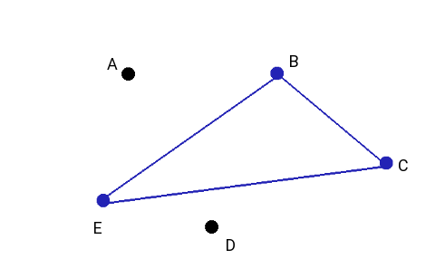

Combinations
We define as binomial coefficient, the rational positive number
For 0 ≤ 0 ≤ n it results n! = n (n − 1) (n−k + 1)(n − k) ⋅⋅⋅ 1 = n (n − 1) (n−k + 1)(n − k)!. So we can express the definition as well as
From definition, it follows directly that
Further, it is easy to prove that for any n ≥ 1 and any k such that 0 < k < n
which provides a convenient means for computing binomial coefficients recursively the coefficients relative to n objects are easily determined once those involving n — 1 objects are computed. The same formula suggests to write down binomial coefficients in a triangular pattern, known as Pascal's triangle:
each coefficient of a given row, except for the 1's on the boundary, is the sum of the two numbers that lie above it in the preceding row, precisely as 1.4.1 prescribes. The construction of Tartaglia's triangle (or Pascal's triangle) shows that the binomial coefficients are natural numbers. Note also from the triangle that
Suppose you’re considering a set of 5 elements, such as {a, b, c, d, e}, and you want to know how many different subsets of 2 elements it has. There are 10, namely {a, b}, {a, c}, {a, d}, {a, e} {b, c}, {b, d}, {b, e}, {c, d}, {c, e}, {d, e}. We say, there are 10 combinations of 5 things taken 2 at a time.
Example. Given n balls of different colours. How many different sets of k ≤ n balls can we form?
Solution. Extracting one ball at a time for k times, we already know that there are n(n — 1) ... (n — k + 1) outcomes. On the other hand the same k balls, extracted in a different order, will yield the same set. Since the possible orderings of k elements are k!, we see that the number of distinct sets of k balls chosen from n is Cn,k. This coefficient represents the number of combinations of n objects taken k at a time. Equivalently, the number of subsets of k elements of a set of cardinality n. ■
To see how Cn,k corresponds to the binomial coefficient, we remmber that when we studied the dispositions without repetition we've seen that the arrangements of k objects from a set of n are Dn,k = n ⋅ (n −1) ⋅ ... ⋅ (n − k + 1) = n!/(n − k)!. These are subsets of k elements from the n elements of the set which differ by order and composition. When dealing with combination, Cn,k the order does not matter. If we pick a subset of k elements from the set of n elements and denote it with Cn,k, each subset can be arranged in k! ways. Therefore Dn,k = Cn,k ⋅ k!. which leads to
Remark. The formula just obtained coincides with the number of repeated permutations, of n elements of which k and n − k are repeated:
Pn,k(k,n − k) = n!/k! ⋅ (n − k)!
1.4.1 Example We must choose three candidates among 6 available. In how many different ways we can select the three ca?
C6,3 = 6 ⋅ 5 ⋅ 4/ 3 ⋅ 2 ⋅ 1 = 20
One important identity of the many important identities that hold for binomial coefficients is the following:
This relation appears obvious if you consider that for every subset of k elements out of the n element, there will another subset of n − k elements.
The last relation comes handy in the computations for cases with k ≠ n/2. For example we can write: C10,8 = C10,2 = 10 ⋅ 9/2 = 45 istead of writing C10,8 = 10 ⋅ 9 ⋅ 8 ⋅ ... ⋅ 3/8 ⋅ ... ⋅ 3 ⋅ 2 ⋅ 1.
1.4.2 Example How many triangles can we build connecting the points of the plane A, B, C, D, E?
Solution. We count all the groups of theree letters which differ at least for one element; This number is C5,3 = (5⋅4⋅3)/(3⋅2) = 10. We can represent these combination in the following diagram:
| A | B | C | D | E |
|---|---|---|---|---|
| ■ | ■ | ■ | □ | □ |
| ■ | ■ | □ | ■ | □ |
| ■ | ■ | □ | □ | ■ |
| ■ | □ | ■ | □ | ■ |
| ■ | □ | ■ | ■ | □ |
| ■ | □ | □ | ■ | ■ |
| □ | ■ | □ | ■ | ■ |
| □ | ■ | ■ | ■ | □ |
| □ | ■ | ■ | □ | ■ |
| □ | □ | ■ | ■ | ■ |
The subsets of three points that make the triangle are represented by black boxes. We see then that the number of simple combination coincides with the number of permutations of 5 elements in which two and three elements are repeated:
P(2,3)5 = 5! /(2! ⋅ 3!) = 10
In general it is true that
1.4.4 Example. You have a bunch of kids, nine of them, and you want to divide them into a group of four, and a group of five, each group, being assigned some task. In how many ways can we do this division?
Solution. C(9,4) ⋅ C(5,5) = 126.
1.4.3 Example A group of 20 people shake hands with each other. How many handshakes take place?
Solution. It is the number of subsets of two elements we can form out of the set of 20 people.
C20,2 = (20 x 19)/2 = 190. ■